Přesné rýsování s okamžitou 3D vizualizací
MongeCAD je desktopová aplikace pro deskriptivní geometrii — Mongeovo promítání, axonometrie, kótované promítání a rýsování v rovině.
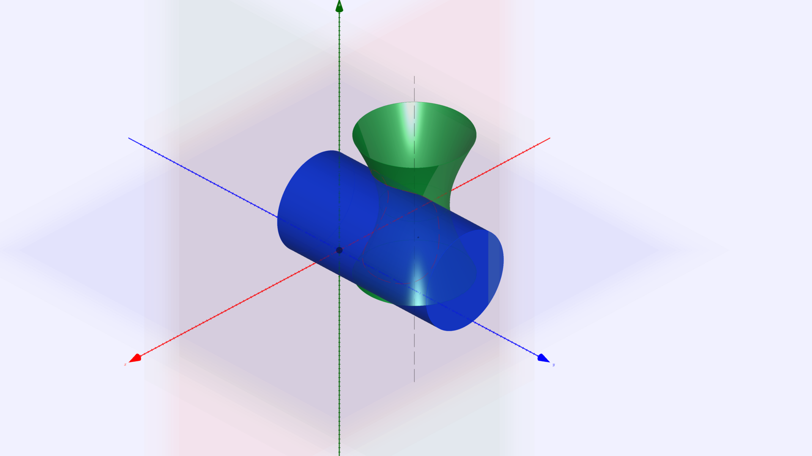
Funkce
Čtyři režimy promítání
Mongeovo promítání (půdorys + nárys), axonometrie (kolmá, šikmá, kosoúhlá...), kótované promítání a čistě 2D rýsování v rovině.
Bohatá paleta objektů
Aplikace nabízí konstrukce všech základních objektů (body, přímky, úsečky, oblouky, kuželosečky, křivky) a umožňuje přímo konstruovat složité objekty - kulové plochy, kužely, válce, hranoly, jehlany a rotační plochy.
Průniky objektů
MongeCAD zvládne spočítat průniky objektů, ať už pro urychlení práce, či pouze pro kontrolu.
Živá 3D vizualizace
Vše nakreslené se okamžitě promítá do interaktivního 3D pohledu s volnou kamerou.
Ukládání a export
Vlastní formát .monge pro ukládání a sdílení konstrukcí, vektorový export výkresů do PDF, undo/redo a automatické obnovení práce při nečekaném ukončení.
Kompatibilita napříč aplikací
Každý výkres můžete převést do jakékoli ze tří promítacích metod — například výkres v Mongeově promítání lze převést do kosoúhlého promítání.
Konstrukce se rýsuje ve sdružených průmětnách hlavního okna a zároveň se v reálném čase zobrazuje v samostatném okně živého 3D náhledu.
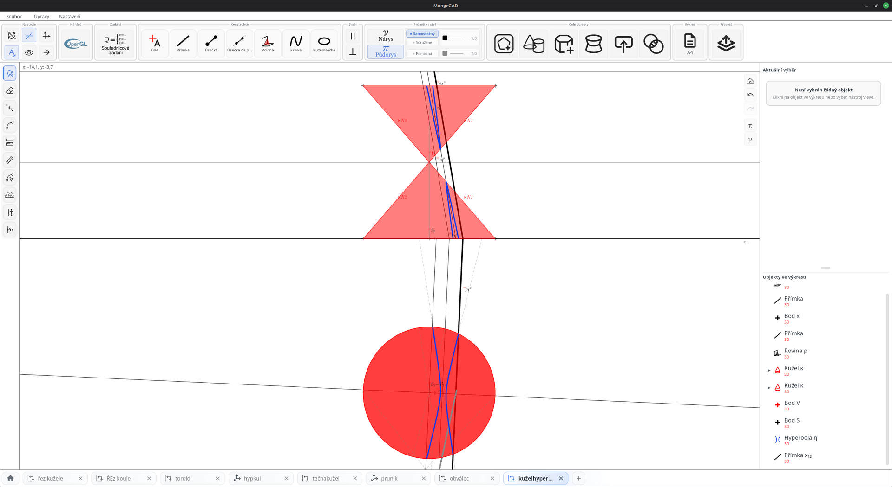
Hlavní okno — sdružené průmětny.
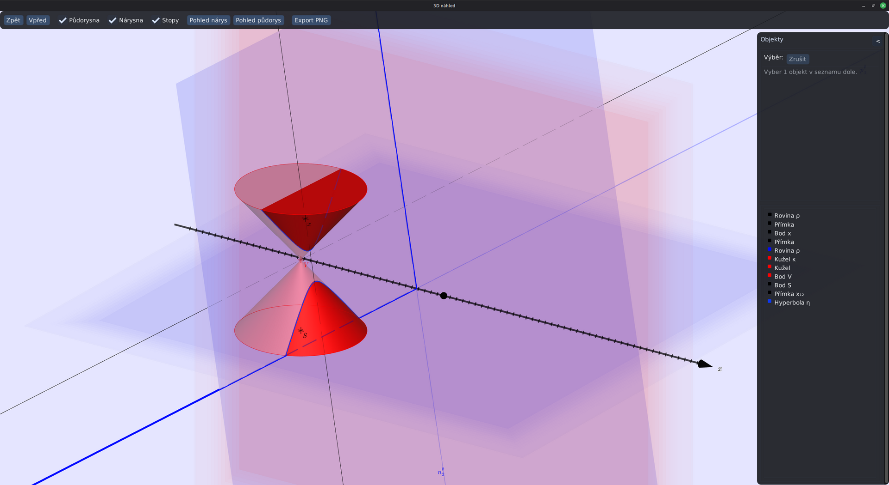
Totéž v okně 3D náhledu.
Ukázky z aplikace
Pár záběrů z běžné práce v programu.
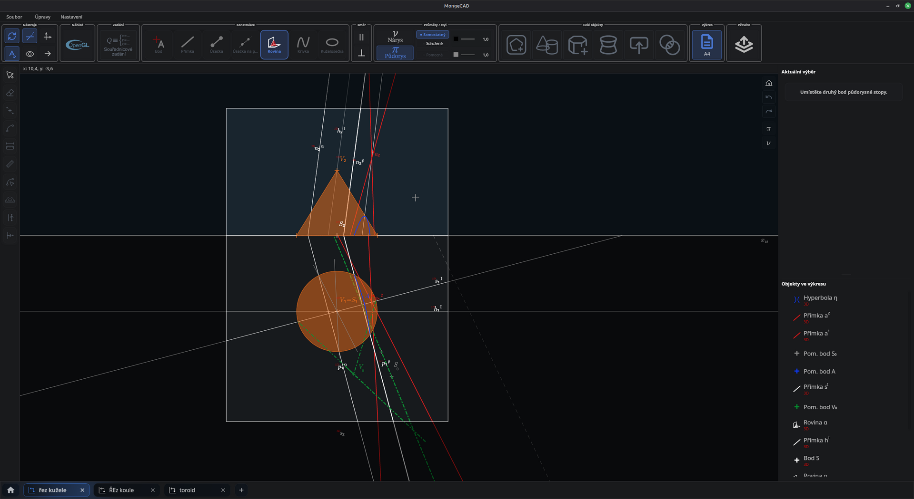
Řez kužele rovinou — hlavní okno, tmavý režim.
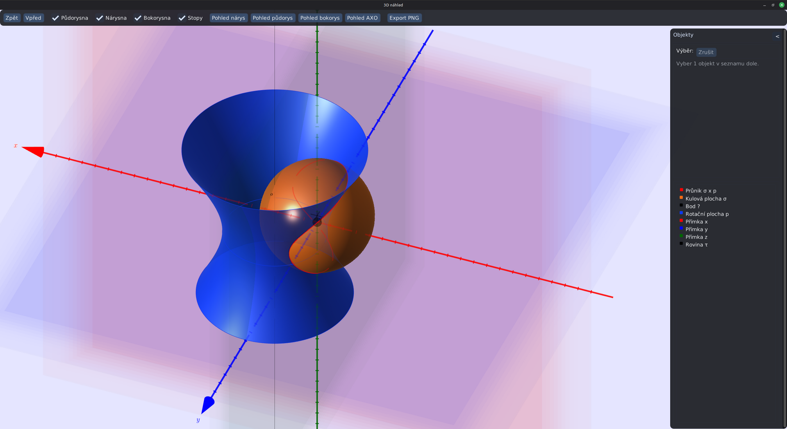
Průnik rotačního hyperboloidu a koule — 3D náhled.
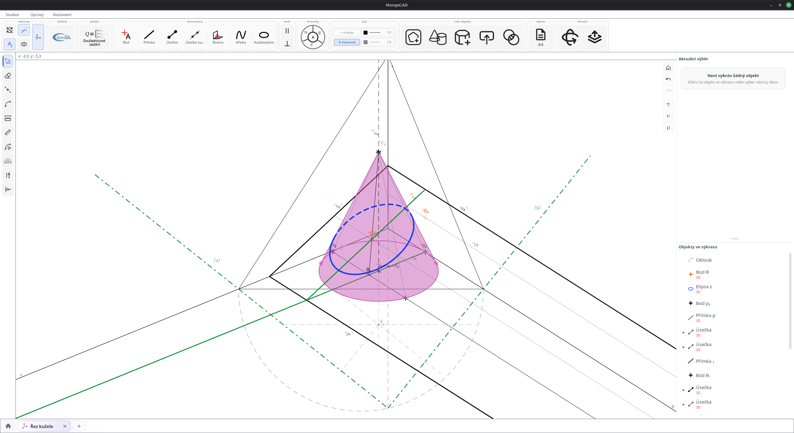
Eliptický řez kužele v axonometrii.
Ukázky výstupů
Výkresy lze exportovat jak v rastrové podobě, tak ve vektorovém PDF. Samotné 3D prostředí pak poskytuje export fotky scény ve formátu PNG.
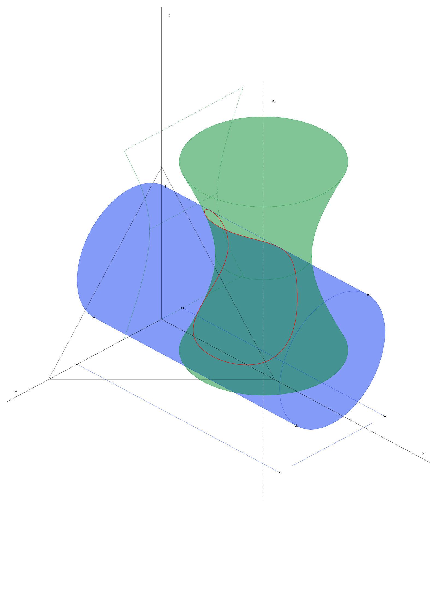
Průnik válce a hyperboloidu — axonometrický výkres.
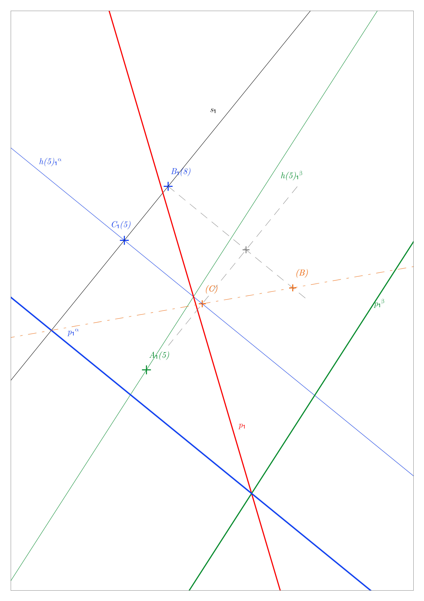
Průsečnice 2 rovin v kótovaném promítání.
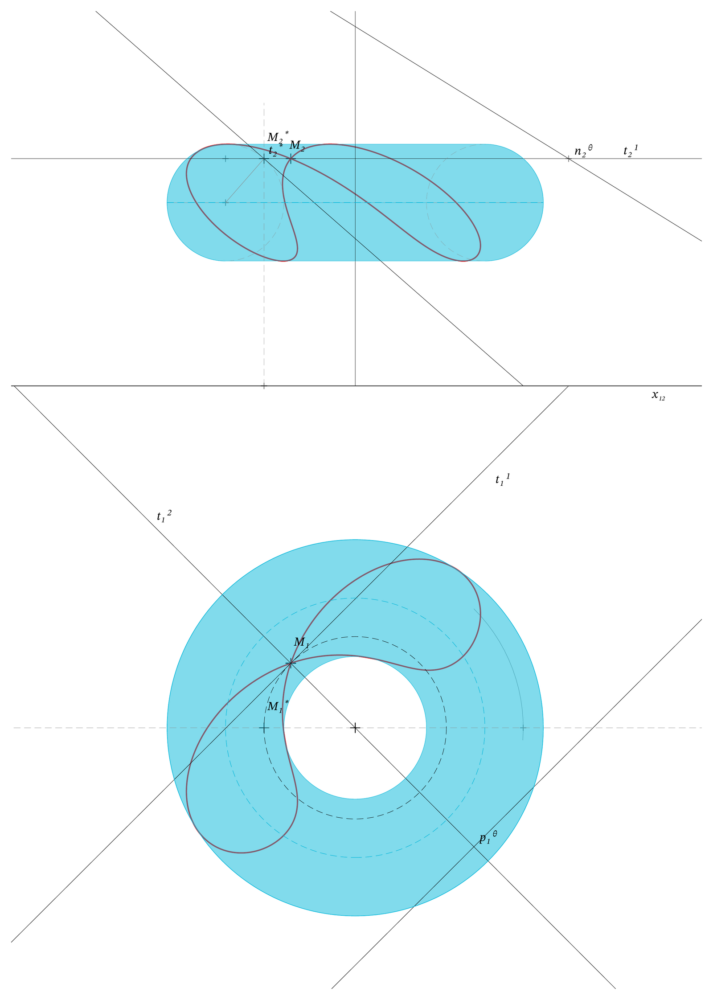
Průnik torusu tečnou rovinou.
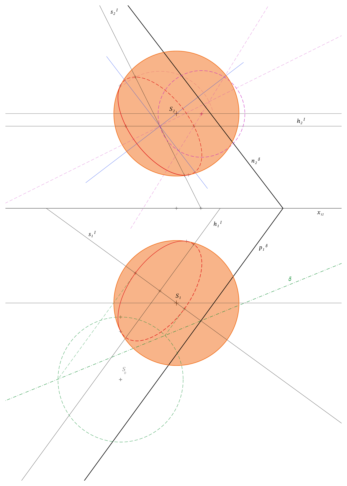
Řez kulové plochy v MP.
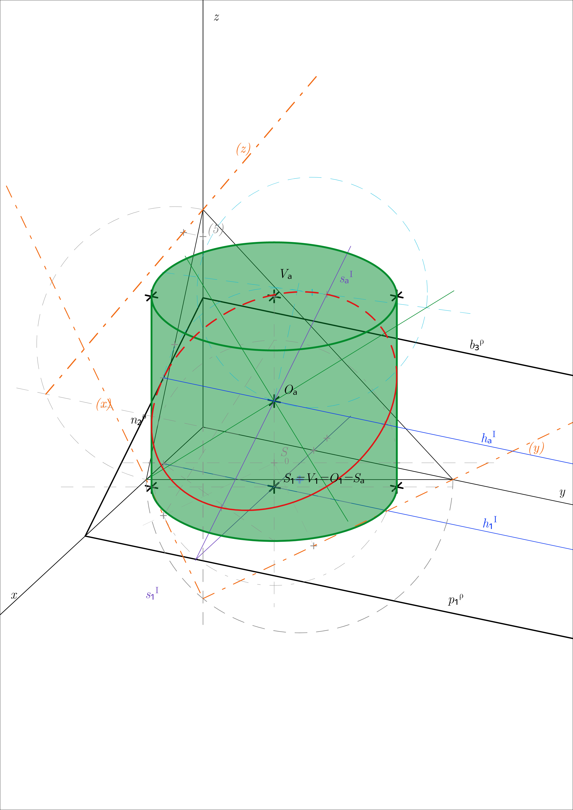
Řez válce v kolmé axonometrii.
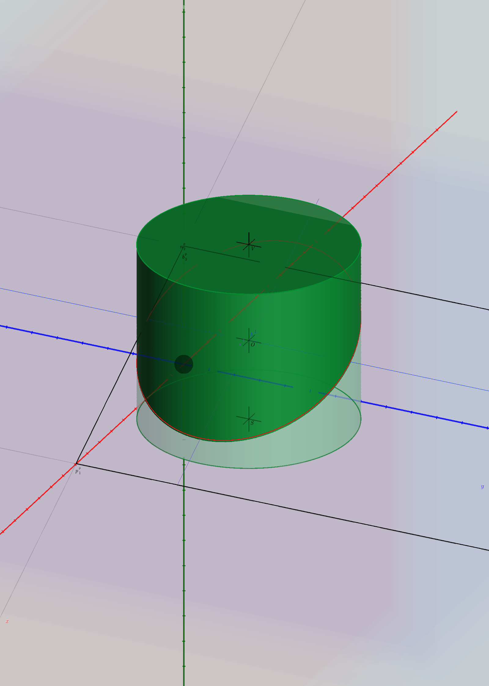
Řez válce v kolmé axonometrii (3D render).